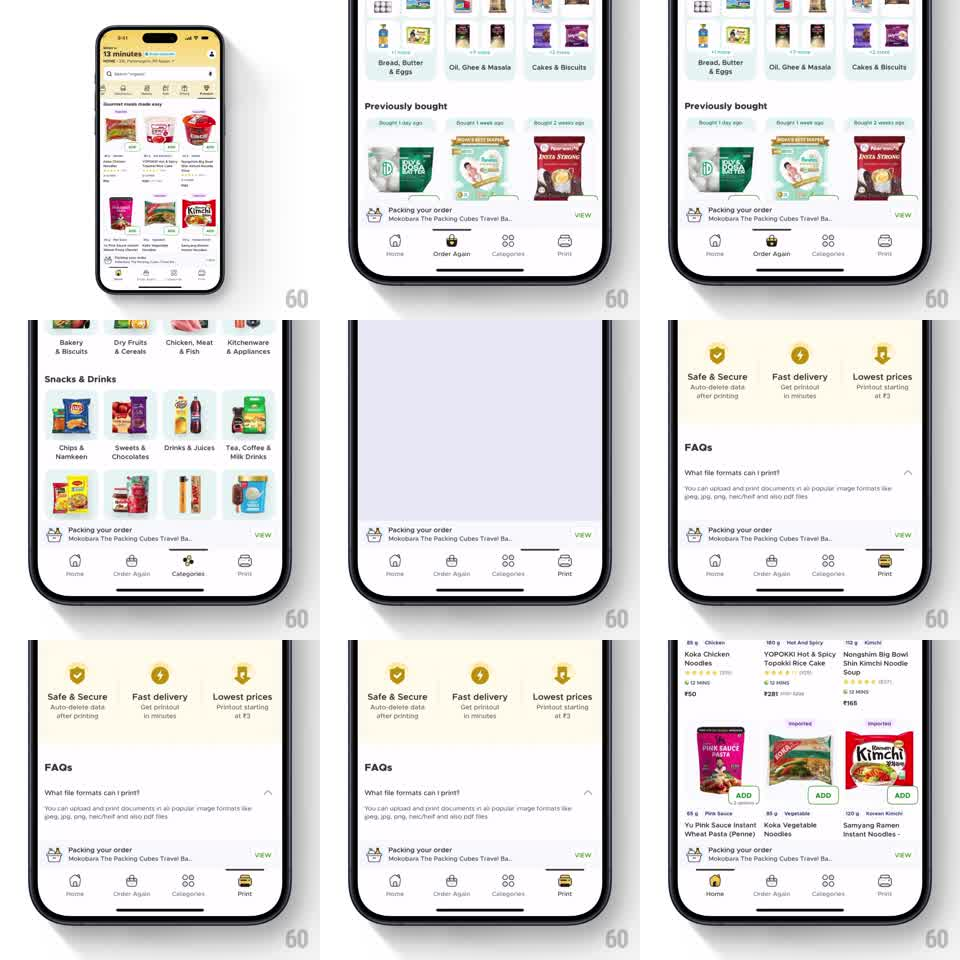

Media
Frame-by-frame

Rebuild this animation 1:1: Blinkit's bottom tab bar - selecting a tab fires a playful springy micro-animation on its icon (bounce, pop, or jiggle) while the label tints and the active indicator slides under it.

Rebuild this animation 1:1: Blinkit's bottom tab bar - selecting a tab fires a playful springy micro-animation on its icon (bounce, pop, or jiggle) while the label tints and the active indicator slides under it. ## Integration Integration: stack-agnostic spec - springs given as stiffness/damping, timed motions as duration + curve; map every value to your framework and animation library of choice. ## Scene Blinkit grocery app: product feed (categories, Previously bought, a "Packing your order" tracker card), bottom tab bar with Home, Order Again, Categories, Print. Print tab opens a page with "Safe & Secure / Fast delivery / Lowest prices" badges and FAQs. ## Motion spec Pattern: per-tab icon micro-animation on selection. - Tap a tab: its icon does a signature bounce - scale 1 -> 1.25 -> 0.95 -> 1 (spring ~400/18, ~350ms) with a tiny rotation (~8deg) on the way up; haptic tap. - The active pill/underline indicator slides horizontally to the new tab (spring ~320/26, ~250ms), slightly overshooting. - Label tints to the active color with a 150ms crossfade; the previously active icon settles back instantly. - The page content switches with a quick crossfade (~200ms) - the icon animation runs on top, independent of page load. ## Calibration - Each icon's bounce is the same spring but icons read differently (house, bag, grid, printer) - keep the motion uniform, not per-icon choreography. - The indicator never teleports; it slides from wherever it was. ## Reduced motion Icons swap with tint only; indicator slides without overshoot. ## Don't miss - The "Packing your order" tracker is content, not part of the tab bar - it doesn't animate. - Print's page content (badges, FAQs) appears with the page, not with the icon bounce.